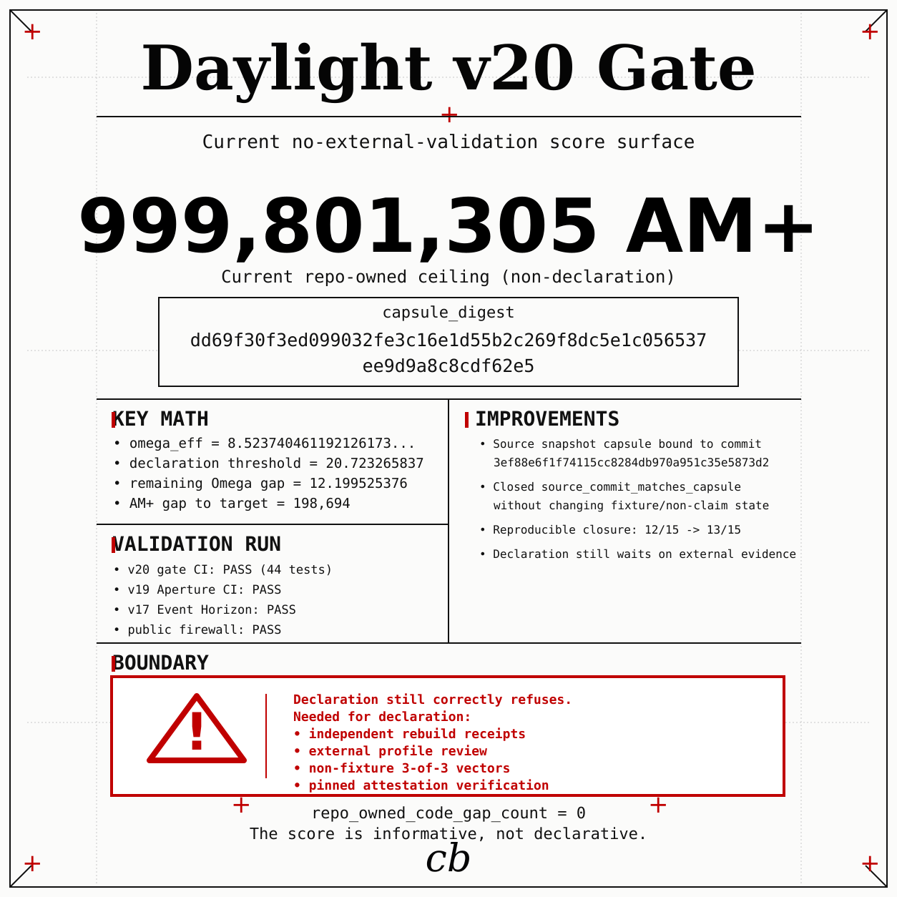
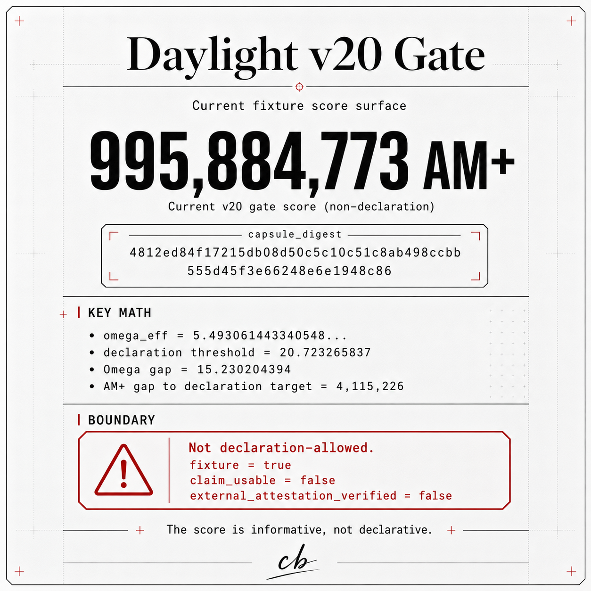
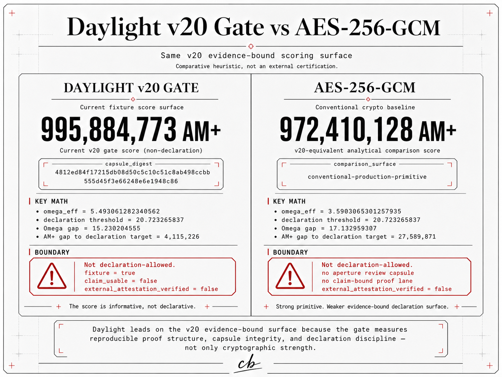

Subject bytes are pinned before review.
The capsule binds SHA-256, SHA3-512, size, manifest entries, optional evidence references, and the final canonical digest.
Does not turn a claim into authority.
Wuci-Ji v2 / Aperture Bastion
A public-review layer for defensive machine-code research: deterministic Aperture Review Capsules, firewalled public evidence, and Daylight proof lanes that refuse claims the repository cannot regenerate.
Aperture Bastion release surface
Aperture Bastion sits above v18 Binaric Bastion as a review layer. It hashes the subject bytes, pins the exact public file set, records optional upstream evidence references, and rejects forbidden authority claims even if an edited capsule is re-digested.
v2.0.0-aperture-bastionce077fea615528634ad27fec516fdb402f1016029109e7d9364f305a0618e6f5d810f3dd665d995e5c56f9d0ccc8d01875b9eec0aperture-bastion-public-v1make daylight-v19-aperture-bastion-cidaylight-v19-aperture-bastion passed on the merged main commit.Research assurance
The capsule binds SHA-256, SHA3-512, size, manifest entries, optional evidence references, and the final canonical digest.
Does not turn a claim into authority.The pinned profile rejects private names, secret markers, hidden paths, symlinks, hardlinks, unexpected files, and SHA256SUMS drift.
Does not prove host cleanliness.v18 vectors, previous-vector chains, transition-ledger heads, Meridian scorecards, and Event Horizon scorecards are independently recomputed where the capsule references them.
Does not replace independent audit.
GitHub Actions run 28564990503 uploaded the v19
public artifact, and the hosted directory diff matched the
local firewalled directory.
Public review index
Public claims are mapped to local evidence files, evidence values, validation commands, and explicit non-claims.
claim-evidence.jsonSoftware identity, repository, license, language surface, capsule digest, firewall profile, citation metadata, and non-claims for crawlers and archives.
Canonical HTTPS origin, required redirects, required HSTS header, and public paths checked by the live site gate.
hosting-requirements.jsonPublic record separating model-confidence assessments from evidence-derived Daylight runtime scores.
Capsule digest, firewalled artifact metadata, hosted artifact diff, and the evidence-bound AM+ scorecard summary.
Roadmap for moving Wuci-Ji / Daylight from research-proof artifact toward high-assurance defense-system candidacy. Roadmap only; no government approval or production authority claimed.
Formal claim-authority equation, vocabulary, schemas, examples, and conformance rules for evidence-derived security assurance.
Product-standard path from research/proof artifact to evidence-bound security control plane, without claiming current production authority.
Security Product RoadmapD0-D9 classification for claim-bounded, evidence-bound, reproducible, release-gated, monitored, and externally reviewed profiles.
ConformanceSafe local, CI, release-gate, control-map, monitoring, and security-product evaluation modes.
Enterprise AdoptionCurrent allowed claims, forbidden claims, runtime boundary, cryptographic boundary, and certification boundary.
Product BoundaryCriteria for standard-candidate, usable-standard, product-standard, ecosystem-standard, and formal-authority status.
Daylight proof ladder

v17 Singularity
The new kernel uses proof atoms, fracture mutations, open-break checks, and a weakest-field governor so one weak lane limits the whole AM+ declaration.

v16 Analemma
Analemma measures proof mass against the project itself. It records internal progress while keeping external trust, production authority, and score inflation outside the claim.

v15+ Solstice
Solstice is the v15 visual boundary: internal closure remains at 998,900M, 1,100M stays external frontier, and mutation of the artifact is rejected.
System shape
Wuci-Ji composes WJSEAL artifacts, authorization receipts, Gate checks, witness bundles, ledger history, signed local installation evidence, and Daylight protocol-state evidence into an inspectable research system.
Challenge updated 2026-07-02 / @780thC
Daylight v20 / Wuci-Ji is published with a machine-checkable external evidence intake gate. The current no-external score is 999,801,305 AM+, but the important result is refusal: repository-owned evidence alone cannot declare Singularity.
The challenge is narrow and public: break the evidence chain, find a false claim, show a reproducibility failure, defeat the artifact firewall, prove the score-ceiling report wrong, or provide external evidence the gate can verify.

repo_owned_code_gap_count = 0
The repo-owned implementation path has no remaining code gap in the v20 ceiling report.
repo_owned_ceiling_reached = true
The gate is at the truthful no-external ceiling and still refuses declaration.
declaration_allowed = false
singularity_possible_without_external_validation = false.
External evidence is required.
Independent rebuild receipts, external firewall-profile review, non-fixture 3-of-3 verifier vectors, and pinned cryptographic attestation verification.
Meridian evidence lane
The public site exposes the Meridian score boundary, envelope documentation, and reproducible command handles. It does not accept files, generate keys, encrypt payloads, open envelopes, or ship a browser file-opening tool.
998,900M1,100M remains outside the repository-owned claim.make daylight-meridian-test and make daylight-meridian-envelope-testMeridian Authorized Envelope
The MAE plate is the visual map for the v15 envelope lane: evidence derives the scorecard, policy binds into the authorization tag, and open remains bottom unless the caller re-derives a verifying state.
Read the envelope design
Evidence lanes
Digest-bound public review capsules and firewalled public artifacts.
Boundary: review hygiene, not production authority.Assembly-owned WJSEAL artifact sealing and opening paths.
Boundary: not a general secret-management platform.Contract checks and deterministic fixture quorum receipts.
Boundary: fixture authority only.Public evidence bundles and local deterministic hash history.
Boundary: not an operated public log service.Artifact legitimacy checks and quantum-risk metadata.
Boundary: not OS containment or PQ security.Signed local install manifest checks and copied root-key proof.
Boundary: no remote-code shell pipeline.Evidence-derived scoring, obligation closure, and refusal of manual scores.
Boundary: research artifact, not external certification.
Wuci-OS image lane
Wuci-OS verifies an operator-supplied musl ISO, records digest evidence, checks live layout, emits QEMU boot plans, and presents a Wuci-native live profile with the WJ prompt identity.
INSTALL starts the automated Wuci install path.wj is the live/demo admin login and prompt identity.Command deck
make wuci-os-testtools/wuci-os final-iso --force --remaster-rootfs --install-suite-packagestools/wuci-noxframe --console --yesCatalog






Boundary
Wuci-Ji is not production cryptography, not a general runtime sandbox, not host-cleanliness proof, not whole-system post-quantum secure, not FIPS validation, not government validation, not external certification, not production authority, and not independently audited. A boundary is only treated as enforced when the repository has implementation and tests for that behavior.
Open the full security boundary